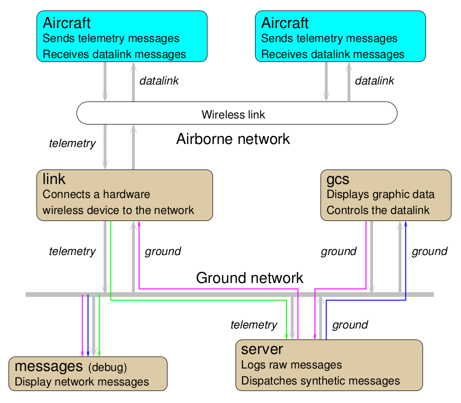

Communication¶
This section will cover the communication in Paparazzi.
Communication in Paparazzi is achieved by the toolkit named PprzLink, which doc can be found here, and code is there.
Messages are divided in 5 classes:
Telemetry: telemetry messages are sent by the drone to the ground station.
Datalink: datalink messages are sent by the ground station to the drone.
Ground: gound messages are sent by an agent running on the ground to an other one.
Alert:
InterMcu: intermcu messages are sent by a processor in the drone to an other processor within the same drone.
Existing messages can be seen on this page, which is generated from the PprzLink code. You can also see the messages in the var/messages.xml file, which is generated at the paparazzi compilation.
Visualising messages¶
Remember the architecture ? Its time to use this messages tool at the bottom left!
The messages tool allows you to visualize all messages on the ground network.
First, start a session as explained in the Flight Simulation page.
Then start the messages tool by going in the Paparazzi Center menu and hiting Tools -> Messages.
After a few seconds, the new window should fill with messages name and blinking green rectangles. Click on a message name to watch its content. The green rectangle appear each time a new message is received. If you click on a low-frequency message, you will also see a count-up on this rectangle. This is the time since the reception of the last message.
There can be multiples telemetry modes. In the GCS (the app with the map), on the botom widget, got to the Settings tab, then to the System, and Telemetry sub-tabs. Change the AP settings from default to minimal and hit the commit button. You will observe in the messages app that less messages are received.
Change telemetry messages and rates¶
You can edit which messages are sent by the drone and at what rate. In the Paparazzi Center left pane, hit the telemetry Edit button. An XML file should open with a text editor.
Note
If this text editor happends to be vi and you are not familiar with it, here is how to escape from it: hit Escape, then type :q!, then hit Enter. Change the default editor on your system with the $EDITOR environnement variable.
Watch how the file is structured: there are process tags, inside which there are mode tags, inside which there are message. It matches what you seen in the GCS Telemetry settings. Don’t worry too much about processes right now, keep in mind that are are mostly interested about the Ap process at the moment.
As an exercise, try to change the period of a message. This is the period in seconds at which this message will be sent by the drone. You can also add a message, picked from the telemetry message class.
For your modification to take effect, you need to re-Build the aircraft. Don’t forget to Stop/Remove all Processes before. After building the aircraft, launch the simulation session and launch again the messages tool: you should now see the effects of your modifications.